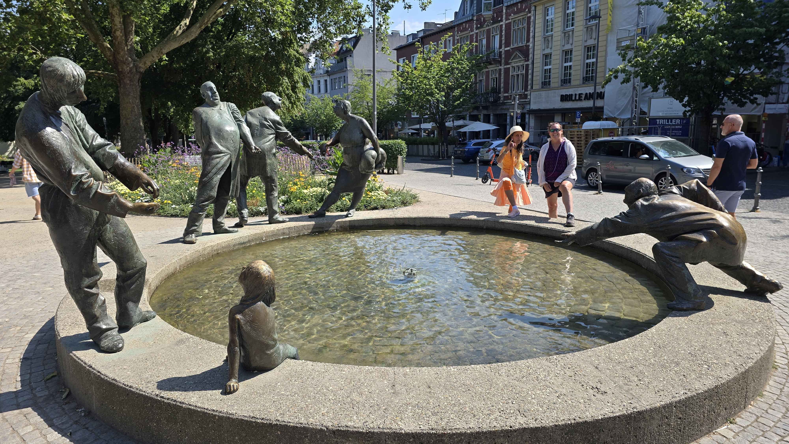
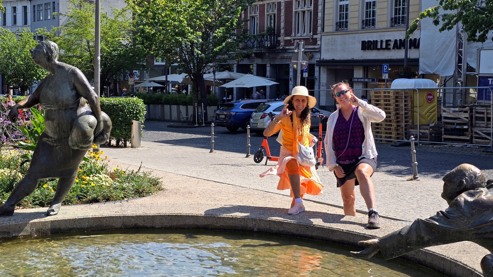
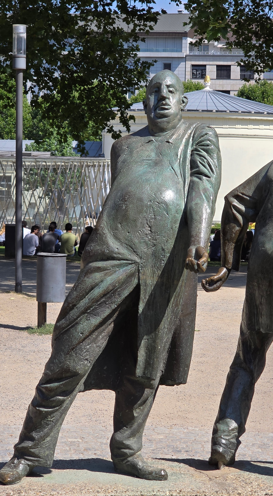
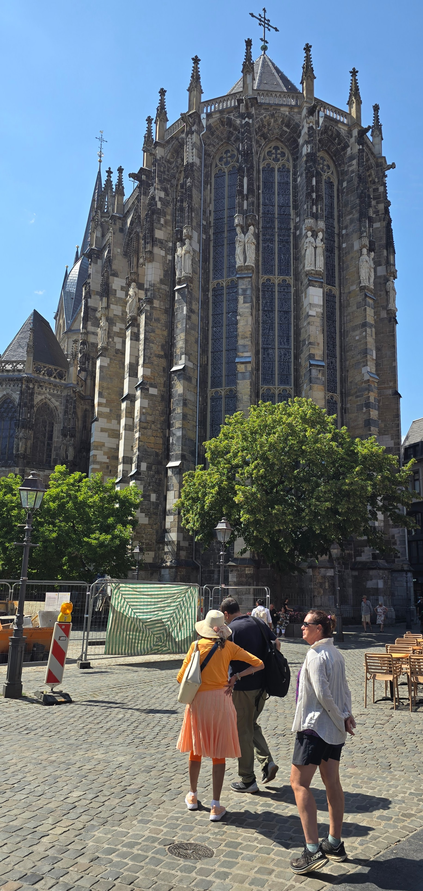
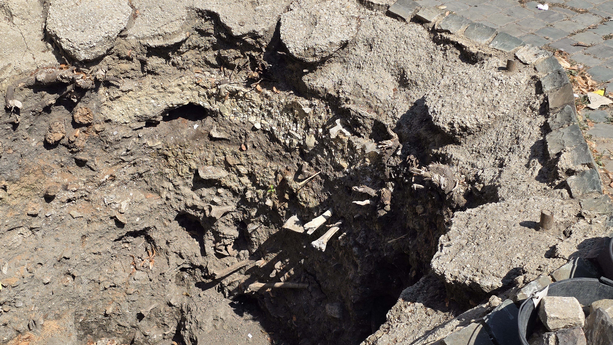
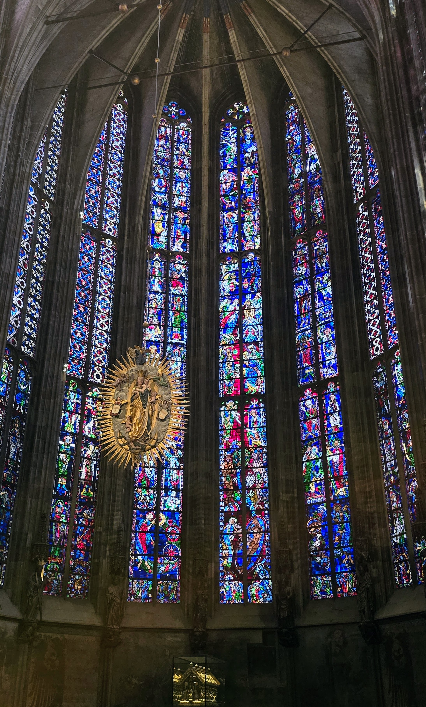
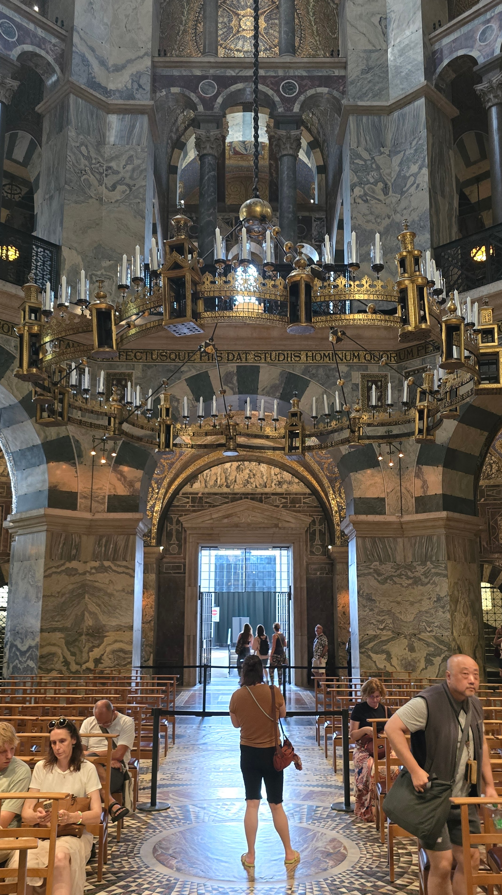
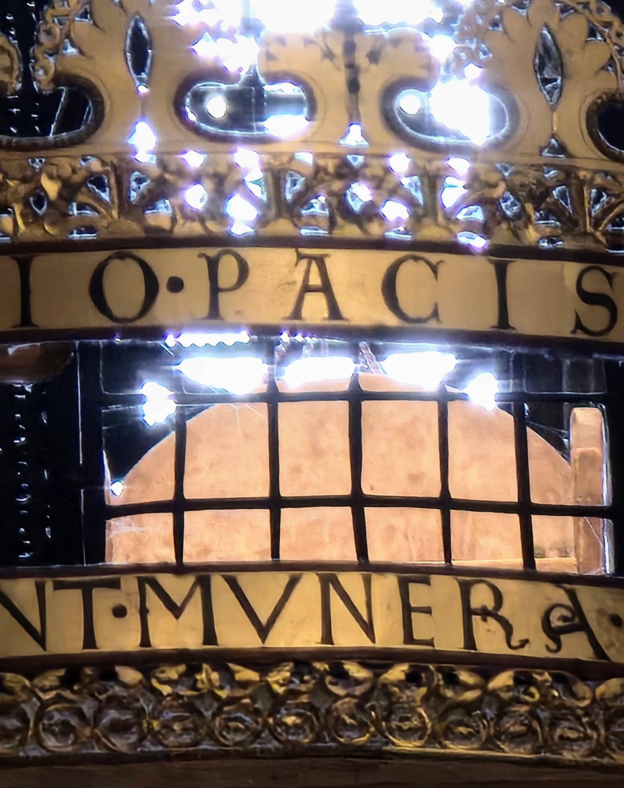

Stolberg (Rhineland) – Accommodation
UnconfirmedThe single photo in this cluster is a screenshot of a laptop screen showing a Wi-Fi password ('Passwort Hausnetzwerk'), evidently taken inside a guesthouse or hotel room. It is not a landmark photo. The GPS coordinates (50.7665N, 6.2255E) place it squarely in Stolberg's old town, so this was most likely the day's lodging rather than a sight worth visiting in itself.
This stop is, strictly speaking, a photograph of a Wi-Fi password screenshotted off a laptop, which is either the least romantic travel photo imaginable or the single most honest one, depending on how one feels about connectivity. The coordinates nonetheless drop it right into Stolberg (Rheinland), a small town wedged into a steep valley of the Vicht stream a few kilometres east of Aachen. Stolberg calls itself the 'Kupferstadt,' the Copper City, a title made official only in 2012 but earned, with considerably less paperwork, centuries earlier.
In the early 1600s, Protestant coppersmiths expelled from Aachen during religious unrest were given refuge here by the local lord of Stolberg Castle, in what may be history's most metallurgically productive act of hospitality. They brought a trade secret -- alloying copper with the region's zinc ore to make brass -- and within decades the town's merchant families, the so-called 'Kupfermeister,' had built the fortified courtyard mansions (Kupferhöfe) that still line its steep lanes, making Stolberg one of the oldest brass-producing towns in the world, Wi-Fi password notwithstanding.







